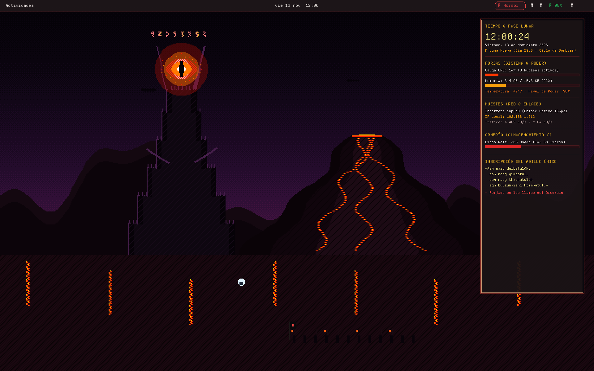
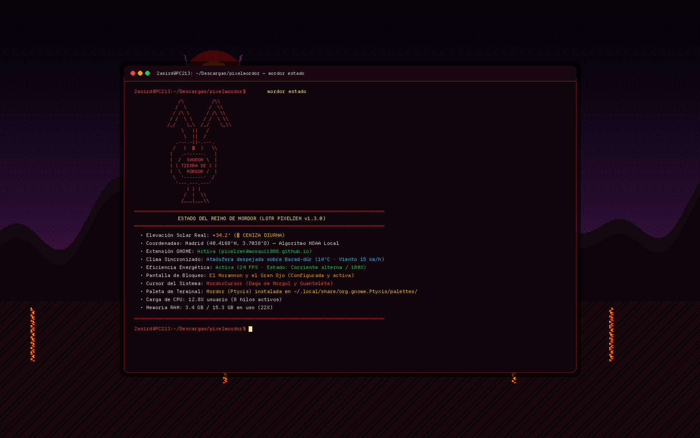
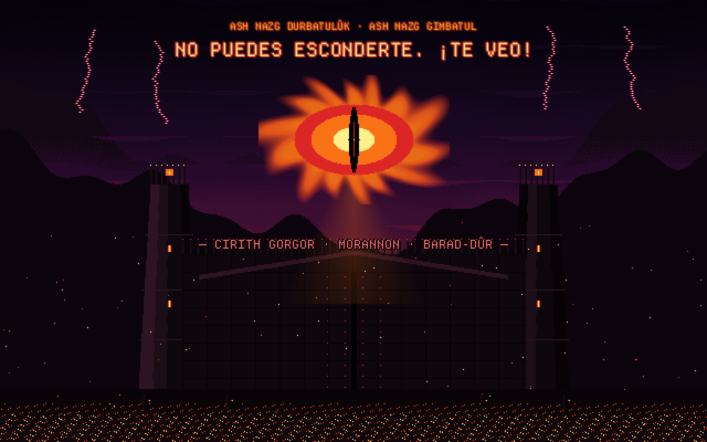
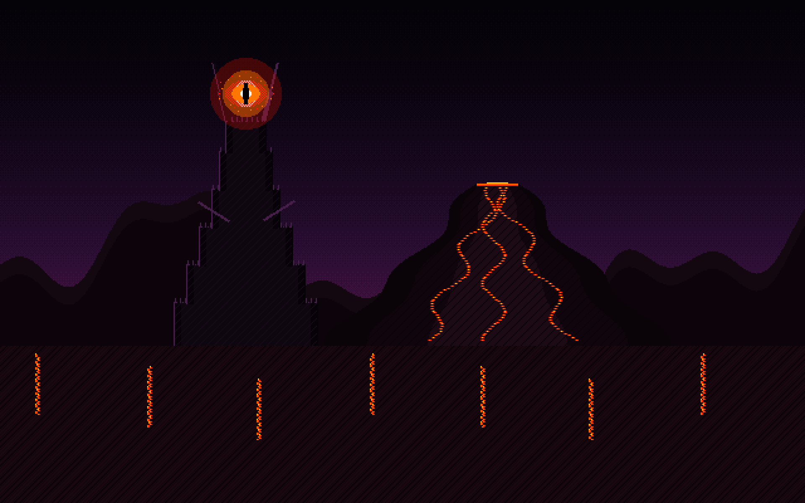
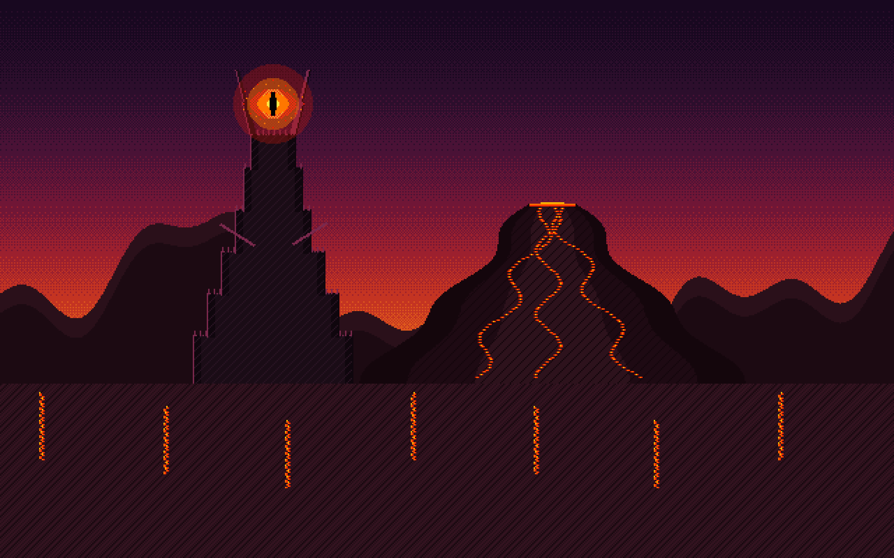
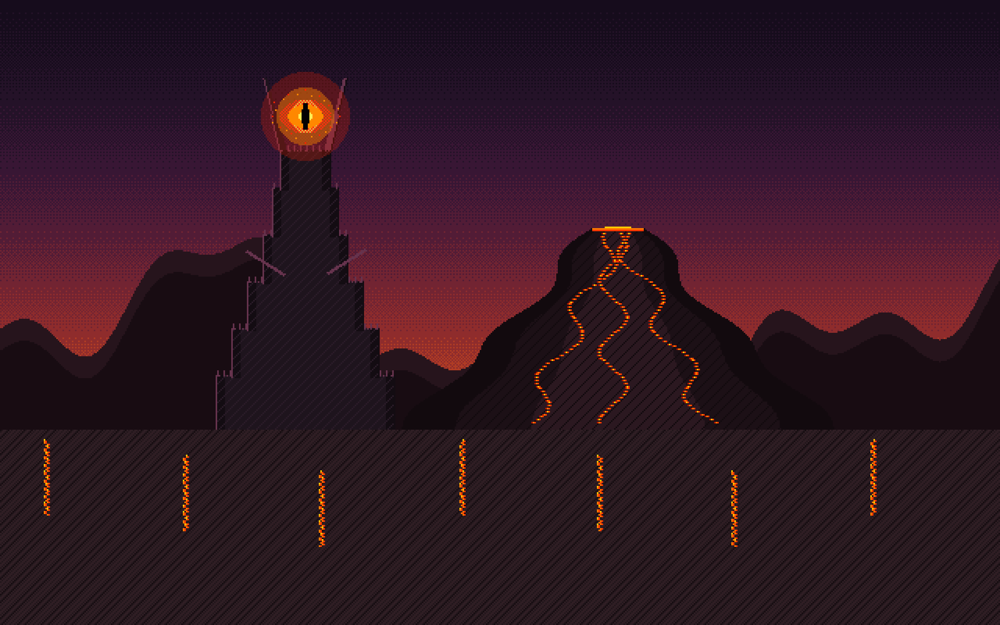

Tema integral de escritorio para GNOME Shell 45/46/47, Libadwaita/GTK4 y Ptyxis. Pixel art animado con ciclo solar real, erupciones en vivo y el Ojo de Sauron vigilando tu cursor.
Una transformación visual y auditiva total para tu sistema Linux.
Calcula la declinación y elevación solar exacta en tiempo real para Madrid (40.4°N). Los cielos y la iluminación cambian gradualmente entre Ceniza Diurna, Hora de Sangre y Noche de Sombras.
mordor auto | mordor dia | mordor sangreEstilo obsidian (#0d0308) para todas tus ventanas y aplicaciones nativas de GNOME (Archivos, Ajustes, Calculadora). Barras de scroll con resplandor de lava y botones volcánicos.
mordor gtk on | offDesata la furia de Mordor al instante con combinaciones directas del sistema: erupciones, cólera, chillido Nazgûl, bloqueo en Morannon y forja del Anillo.
Super + Alt + {E, S, N, B, F}Paleta RGB oficial con negros ceniza, rojos magma y oros ardientes. Incluye prompt interactivo en Bash con el Ojo de Sauron, estado Git y el Anillo Único.
mordor terminal | mordor promptEventos acústicos integrados en el sistema: alertas de diálogo, conexión de dispositivos USB, vaciado de papelera y campana de terminal con eco de Barad-dûr.
mordor sonido [on|off]Arte pixel art panorámico de las Puertas Negras de Mordor bajo la mirada incansable de la pupila de fuego. Tu sesión custodiada por las legiones de Sauron.
mordor bloqueo lockPrueba los comandos de línea de comandos del tema en este simulador en vivo.
Control directo del escritorio con combinaciones nativas de Media Keys.
| Combinación | Acción | Comando Ejecutado |
|---|---|---|
| Super + Alt + E | Super-Erupción en el Monte del Destino (Orodruin) | mordor erupcion |
| Super + Alt + S | Cólera del Gran Ojo (Onda expansiva ígnea) | mordor colera |
| Super + Alt + N | Chillido y Picado de combate del Nazgûl | mordor nazgul |
| Super + Alt + B | Bloquear Pantalla (El Morannon / Puertas Negras) | mordor bloqueo lock |
| Super + Alt + F | Forja 3D interactiva del Anillo Único en Ptyxis | ptyxis -- mordor forjar |
Vistas de alta fidelidad tomadas directamente desde el entorno real.

Barad-dûr, Orodruin en erupción y panel HUD con monitoreo de CPU/RAM y citas del Anillo.

Paleta Mordor.palette de 16 colores con prompt interactivo de Sauron y rama Git.

Las imponentes Puertas Negras de Mordor bajo la guardia del Gran Ojo.

Iluminación nocturna con el resplandor de la pupila de Sauron atravesando la oscuridad.

Transición al atardecer cuando el sol se oculta tras las Ephel Dúath.

Cielos densos de ceniza volcánica bajo la luz filtrada del mediodía.